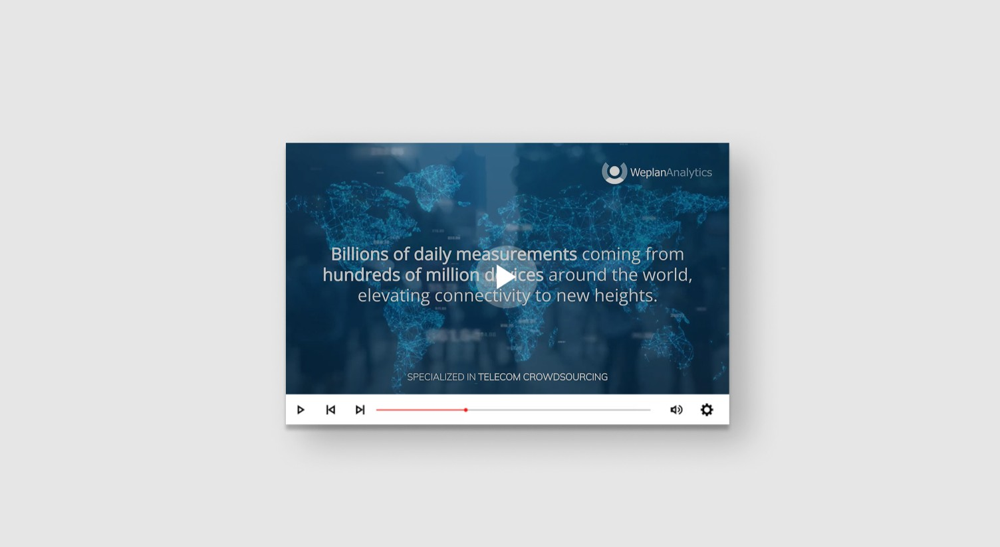
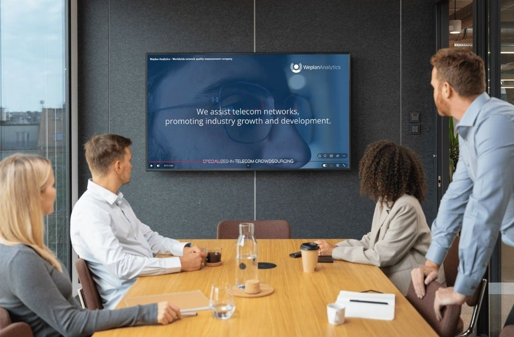

Diseño gráfico · Vídeo
Vídeo corporativo
En 3 días y para el Mobile World Congress: vídeo corporativo claro, directo y visualmente impactante.

Objetivo del proyecto
- ○Comunicar quién es la empresa y su valor diferencial en menos de 3 minutos.
- ○Transmitir solidez, tecnología e innovación en un contexto de alto nivel.
- ○Mantener coherencia total con la identidad visual de la marca.
- ○Entregar el vídeo listo para presentar en el evento.
El reto: todo en 3 días
Necesitábamos un vídeo que en pocos minutos explicara quiénes somos, qué hacemos y por qué nuestra tecnología marca la diferencia.
El plazo era ajustado, el contexto exigente y el margen de error mínimo. El primer paso fue definir con precisión qué debía quedarse en el espectador: qué contar, en qué orden y con qué tono.
Tres preguntas, una respuesta clara: quiénes somos, qué hacemos y por qué elegir la empresa frente al resto.
El proceso de producción
Trabajar desde dentro nos permitió ir al grano: conocíamos los diferenciales, los clientes y el tono de la marca. El trabajo fue estructurar toda esa información y transformarla en una narrativa clara, ordenada y orientada al impacto.
Redacté el guion corporativo priorizando la síntesis. Cada frase tiene un propósito: informar, generar credibilidad o reforzar la diferenciación. El ritmo del texto anticipó ya el montaje del vídeo.
Definí la estética del vídeo a partir de la identidad corporativa que ya teníamos establecida: la paleta, la tipografía y el sistema gráfico propio de la empresa. El ritmo visual acompaña la narrativa sin sobrecargarla, dejando espacio para que el mensaje respire.
Con el guion y la estética definidos, la fase de producción fue eficiente y sin fricciones. Edición, animación y montaje final garantizando total cohesión con la marca y una fluidez narrativa que mantiene la atención de principio a fin.
Coherencia visual de marca
El vídeo forma parte del mismo ecosistema visual que el resto de materiales de la empresa.
Esa coherencia no es solo estética: refuerza el reconocimiento de marca.
- Paleta y tipografía 100% alineadas con la marca.
- Transiciones y ritmo visual calibrados con el guion.

Presentado en el Mobile World Congress.
Un vídeo corporativo sintético, claro y visualmente sólido que resume la propuesta de valor en pocos minutos.
Ver vídeo completo →Siguiente proyecto